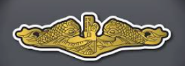
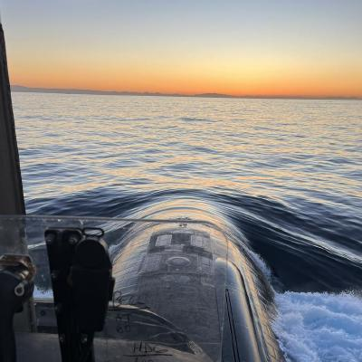

(soon to be) Navy submarine veteran and aspiring developer. When the Navy issues me free time I work on game dev, data exploration, and whatever else catches my interest. If the weather is really nice then you can find me out on the golf course!
I started out life as a tinkerer — always pulling things apart and (sometimes) putting them back together. Being slightly misinformed but not lacking academic aptitude, I set out to college thinking I wanted to be a mechanical engineer. Turns out you don't get to take apart small engines and do woodworking as a Mech E.
After some wandering around I changed schools and switched to Electrical Engineering, but once again found that while you do get to build things sooner as an EE... you're still looking at several semesters of course work before doing anything fun (in my mind).
Luckily, I was required to take SY204 at USNA with Dr. Dan Roche and I discovered something that scratched that childhood desire to tear down, understand, and build that I'd been missing.
It was a revelation of sorts — I found myself for the first time daydreaming about classwork while out playing sports (I'd never done that before — always the other way around). I loved the problems, I loved getting that code to compile to see that 100% on the unit test. Every new data structure or algorithm was another tool I could use. I could imagine something and have it built that day, sometimes even that hour. I happily spent many a late night clacking away on my ducky keyboard wondering why I had been so focused on getting an engineering degree when I could've been doing this the whole time
Unfortunately, the Navy didn't allow too much free time to continue developing this passion, but I fit it in where I could. This page has some of those small projects squeezed into late nights and the scarce few weekends I had between duty, inspections, and deployments.
My current interests include game development with Godot, data analysis in Python, and building all the random ideas that pop into my head.
To join a team working at the edge of what is considered possible. To push the boundaries of what most people would consider a "problem worth solving" and instead imagine — then build a better future for humanity.
I am seeking a dynamic role in the software engineering space with an eye towards returning to a supervisory or customer-facing position after a few years in the seat as an engineer. Roles where I can interact with the consumer and help identify, define, and translate problems into actionable tasking is my specialty Available for a DoD SkillBridge starting July/August 2026, and full-time employment by October 1
Experienced leader and engineer with over six years' experience developing teams and managing technically complex projects. Operating independently in ambiguous problem spaces. I have a habit of taking initiative and driving problems to their solutions. If I'm not going to get it done, then who will? My software experience has centered around creating automated internal tools to streamline data collection and validation.
I am Committed to a "people-first" leadership style that prioritizes mental health, mentorship, and technical excellence to drive impact.
A snapshot of what I've been building on the side.
A small game built with Godot 4 and GDScript — playable right here in the browser via the WebGL export.
Jupyter notebooks covering exploratory data analysis on datasets I find interesting.
I'm starting to put some things I built on my page; but life's busy so don't be surprised if it's a little empty at the moment. GitHub. Feel free to explore, fork, or reach out.